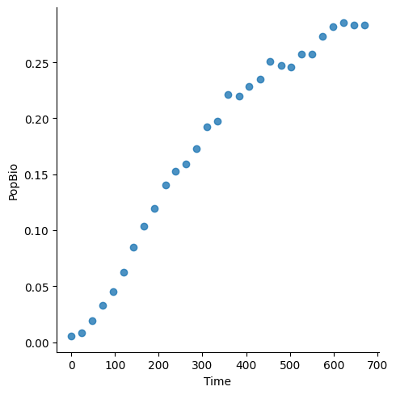
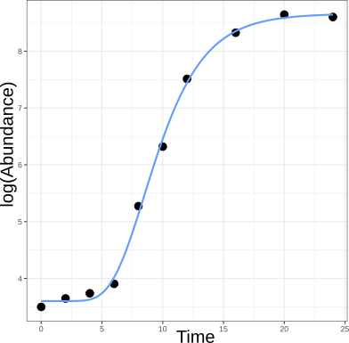
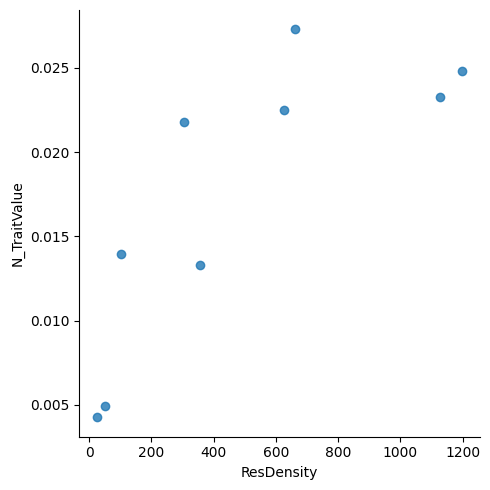
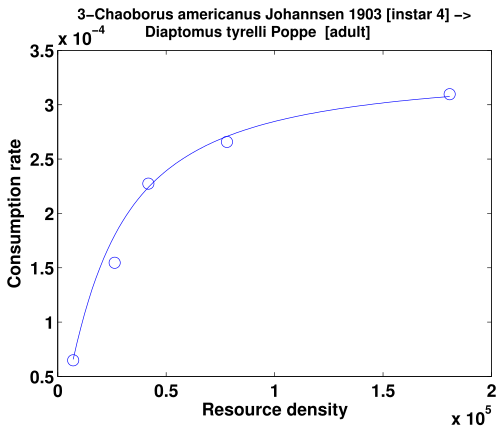
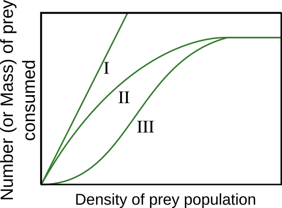
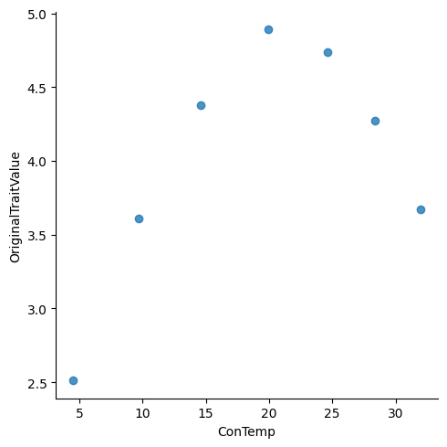
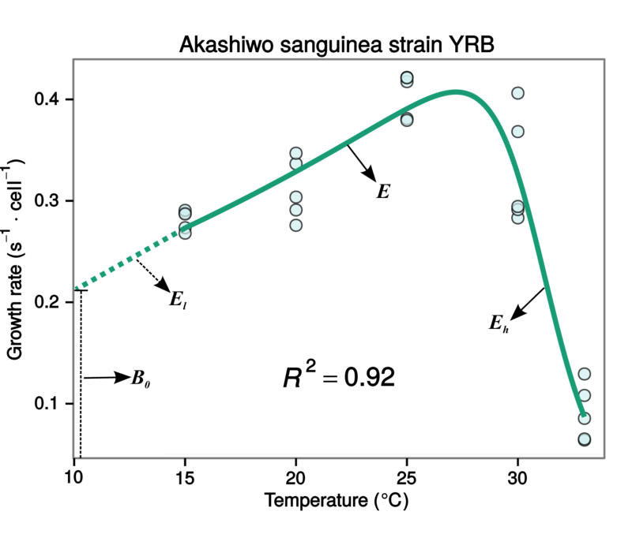

The Computing Miniproject#
Introduction#
The computing Miniproject gives you an opportunity to try the “whole nine yards” of asking and answering a scientific question in biology (potentially involving multiple sub-questions/hypotheses) in a fully reproducible way. It will, in essence, give you an opportunity to perform a useful “dry run” of executing your actual Dissertation project. It is an opportunity to apply the computational methods you have been learning to a biological problem.
Objectives#
The general question you will address is: What mathematical models best fit an empirical dataset?
You may think of this as testing a set of alternative hypotheses — every alternative hypothesis is nothing but a different model to describe an observed phenomenon, as you will have learned in the model fitting lectures.
The Project#
From the options provided to you (below), you will choose an empirical dataset and a set of alternative models to fit to the data in that dataset.
The Miniproject must satisfy the following criteria (and follow the accompanying guidelines):
It employs the biological computing tools you have learned so far as necessary: Shell (bash) scripting, Git, LaTeX, R, and Python. Using these tools, you will build a workflow that starts with the data and ends with a written report (in LaTeX). How you choose the different tools (e.g., how much Python vs R) is your choice; that is part of what will be assessed.
Fits and compares at least two alternative mathematical models to the data. The models should be fitted and selected using an appropriate method. For example, you may use a combination of Ordinary Linear and Nonlinear Least Squares (NLLS) methods to fit \(\ge 2\) alternative models to data, followed by model selection using AIC and BIC.
It should be fully reproducible. You will write a script that “glues” the workflow together and runs it, from data processing to model fitting to plotting to compilation of the written report (More detailed instructions on report below). Refer back to the MulQuaBio Computing chapters to see how you would run the different components. For example, we have covered how to run R and compile \(\LaTeX\) using the
subprocessmodule in the Python Chapter. The assessor should be able to run just this script to get everything to work without errors.
You will be given lectures and practicals on model fitting using least squares before you start on your Miniproject.
Please read the papers in the Readings & Resources section below (and in particular, the Johnson and Omland ([Johnson and Omland, 2004]) paper) — these will help orient you in the right direction for tackling your Miniproject.
The Report#
The Report should,
be written in LaTeX using the article document class, in 11pt (any font will do, within reason!).
be 1.5-spaced, with continuous line numbers.
have a Title, Author name with Affiliation, and Word count on a separate Title page.
have an Introduction with objectives of the study, and appropriate additional sections such as Methods, Data, Results, Discussion, etc.
contain in the Methods a sub-section called “Computing tools” which states briefly how each of the scripting languages (bash, R, Python) was used, what packages within them were used, and a justification of why.
have references properly cited in text (using a non-numeric in-text citation format such as apalike) and formatted in a list using bibtex.
contain \(\leq\)3500 words excluding the contents of the title page, references, and Figure or Table captions+legends. There should be a word count at the beginning of the document (typically using the
texcountpackage).
Guidelines#
Please read the general (not word count, formatting, etc.) dissertation writing guidelines given in the Silwood Masters Student Guidebook.
Tip
Start writing early. Its NEVER too early to start writing! Outline the structure of your report and attempt to write a brief introduction, even if you don’t have any results or have not finalized your methods, computational workflow, or analyses. Doing this preliminary writing will force you to think about the logic of what you are planning to do, put your planned work in some context, and help motivate you.
Here are some additional suggestions/guidelines:
In General:
In scientific writing (papers, reports), a “narrative” or “flow” is important. What this means (more on each of these components below):
Starting with the Title, and through the Introduction, Methods, Results, and Discussion, there is a common thread (focal issue or topic).
The Title gives a summary of what the article is about, and may even convey what the main finding is.
The Introduction clearly and accurately builds an “expectation” for the reader, i.e., what to look for in the subsequent sections.
The Methods and results, to the extent possible, follow the same sequence of topics (and questions/hypotheses) that were laid out in the Introduction
The Discussion reminds the reader about what the original goals of the study were, states the key findings succinctly, and then discusses their implications in the wider context, and then finishes off with some caveats and a conclusion that delivers the final takeaway messages.
Avoid sub-sectioning (with headers) the Introduction and Discussion sections as it breaks the flow of your “narrative”. On the other hand, you will almost always subsection the Methods and often the results section.
Pay attention to detail:
Do a spell check on the final draft.
Make sure that all graphics are rendered in good quality (use vector graphic formats as much as possible). Remember, \(\LaTeX\) allows you to embed vector graphics in PDF.
Make sure that all the display items (Tables + Figures) have a text caption that states what the display item is for, and then a text legend that explains the figure and delivers any take-home messages.
The display items alone should be able to tell most of the story. Once you have an outline of the manuscript, first, before doing any more writing, put in the display items (generally, 4-6 should be enough) with Captions and Legends, and see if they are indeed telling the story you would like your paper/report to tell.
Avoid the words “explore” or “look at” to describe your objectives.
Use direct speech (as it is YOUR work!).
So, for example, avoid phrases such as “This study investigates”; say “Here I investigate” or something like that instead.
The Title
The Title should give a summary of what the article is about, and may even convey the main finding(s). Make it as result-focused as possible, and avoid being vague.
Keep the number of words to a minimum (up to 10-15 words is reasonable).
Some succinct title examples:
“The role of xx in determining yy.”
“The relative success of xx models in providing parameter estimates for yy.”
Or better still: “xx models outperform yy models for quantifying zz data.”
Or even better still: “xx [organisms/traits] differ systematically across yy [some grouping variable, such as location or taxonomic categories]”.
Some not-so-nice title examples:
“A comparison of models for describing zz using Linear and non-linear model fitting with AIC/BIC”.
“An exploration of xx models for describing yy data using Linear and Non-linear model fitting with model selection”.
Abstract: The report must have an Abstract.
It should be a “mini-paper” in itself: So, 1-2 lines on background, 1-2 lines on the paper’s objectives, 1-2 lines on the methods, 1-2 lines on the main results, 1-2 lines on the main conclusions + take-home messages. Remember the abstract counts towards the total word limit (at least as far as your Mini-project report is concerned), so you will need to be succinct. About 200 words is the suggested maximum.
Do not be vague about the take-home messages at the end of the abstract. For example, do not say something like “Thus this study shows that more work needs to be done…”, or “This study shows that model selection is useful…”. Try instead to say something like “This study shows that in general, xx models are better suited for yy data…” or “This study provides evidence that in xx [organisms/traits], yy models tend to under-perform because…” (NOTE THAT THESE ARE HYPOTHETICAL/EXAMPLE STATEMENTS!).
Introduction:
The Introduction should open with a general enough background (with citations). What is “general enough”? – A context that justifies the main focus of the study, and motivates the reader. So, for example, if the focus is on population growth rates, provide context for why they are important to study in biology.
Towards or at the end of the Introduction, provide some specific questions or hypotheses that will be addressed in the study. But do not present hypotheses if they are not backed by logical arguments or mathematical/computational modelling/theory. Asking questions is better than (logically/theoretically) unfounded hypotheses. The narrative of the Introduction should funnel the reader’s attention naturally towards the stated hypotheses/questions; the hypotheses/questions should not come out of the blue.
And if you are going with hypotheses, adding statements following the hypotheses that briefly explain the logic behind each hypothesis is often a good idea.
Methods:
This will typically include subsections for key elements of your methods (e.g., Data, Models, Model fitting, etc).
Do not go overboard with describing every detail and every step of your workflow. For example, you do not need to state that “figures were plotted in ggplot and saved to a directory called xx”.
Note that there is an additional requirement for the miniproject report in particular: include a section on specific computing languages and tools used and the justification for using them (more on this later).
results:
These can also be sub-sectioned by the main questions/hypotheses/issues you are tackling.
Avoid discussion of the results here.
reference the Figures and Tables clearly and specifically (e.g., refer to key sub-panels of figures when needed).
Discussion:
Start by reminding the reader about what the original goals of the study were.
State key findings succinctly.
Then discuss their implications in the wider context (with additional referencing beyond what you had in the intro).
Include a paragraph or two of caveats/shortcomings with a clear indication of what future work can do to address them.
End with a conclusion that delivers the final takeaway messages.
Supplementary Information (SI):
If used, SI should be a separate document and cited in the main text.
Make sure it is a separate document that includes its own references and sections/subsections.
When citing the SI in the main text, reference specific sections/subsections.
The SI should be concatenated with the main document in the final submission.
Submission#
Add, commit, and push all your work to your Git repository using a directory called MiniProject at the same level as the Week1, Week2, etc. directories, by the MiniProject deadline given to you.
At this stage, you are not going to be told how to organize your project — that’s part of the marking criteria (see next section).
Note
The single script that runs the entire project should be named run_MiniProjectwith an appropriate extension (e.g., run_MiniProject.py or run_MiniProject.sh).
Marking criteria#
Equal weightage will be given to the code+workflow and writeup components — each component will be marked to a max of 100 pts and then rescaled to a single mark / 100 using equal weightage
The assessor will be looking for the following while assessing your submission:
Computing#
A well-organized project where code, results, data, etc., are easy to locate, inspect, and use. In the project’s README, also include:
Version of each language used.
Any dependencies or special packages the user/marker should be aware of.
What each package you used is for.
A project that runs smoothly and efficiently, without any errors, once a single script is called.
Report#
A report that contains all the components indicated above in “The report” subsection, with some original thought and synthesis in the Introduction and Discussion sections.
Quality of the presentation of the graphics and tables in your report, as well as any plots showing model fits to the data.
Don’t forget to read the report guidelines above.
Overall#
The marking criteria you may refer to for both components are the summative marking criteria.
The goal is to fit as many mathematical models as possible, but the minimum is 2 (to allow model comparison). You will get more marks for picking more “difficult” models to fit and compare (basically, one or more non-linear mathematical models).
However, note that you need to pick a problem that is within reach. You will not get extra marks for attempting to fit one or more “difficult” models and then failing overall to achieve a coherent report and model fitting exercise, because, for example, you ended up spending too much time on the “difficult” models.
Suggested Workflow#
You will build a workflow that starts with the data and ends with a LaTeX report.
The following components and sequence of your workflow are suggested (you may choose to do it differently).
Data preparation script#
First, a script that imports the data and prepares it for model fitting. This may be in Python or r, and will typically have the following features:
Creates unique IDs so that you can identify unique datasets (e.g., single thermal responses or functional responses). This may not always be necessary because your data might already contain a field that delineates single curves (e.g., an
IDfield/column)Deals with missing and other problematic data values.
Saves the modified data to one or more CSV files.
Model fitting script#
A separate script that does the Model fitting. For example, it may have the following features:
Opens the (new, modified) dataset from the previous step.
Does model fitting. Ultimately, you need to fit at least one mechanistic/nonlinear model along with one or more linear models, but for building your workflow, just go ahead and fit a couple of different linear models (e.g., linear regression vs. quadratic and/or cubic polynomials).
Calculates AIC, BIC, r\(^{2}\), and other statistical measures of model fit (you decide what you want to include).
Exports the results to a CSV that the final plotting script can read.
Note
Some data series (e.g., a single growth rate or functional response curve) may have insufficient data points for fitting a particular model. That is, the number of unique x-axis values is \(\le k\), where \(k\) is the number of parameters in the model (e.g., a regression line has two parameters). Your model fitting will fail on such datasets, but you can deal with those failures later (e.g., by using the try keyword that you have learned in both python and r chapters). In particular, the model fitting (or estimation of goodness of fit statistics) will fail for datasets with small sample sizes, and you can then filter these datasets after the Model fitting script has finished running and you are in the Analysis phase.
Final plotting and analysis script#
Next, write a script that imports the results from the previous step and plots every curve with the two (or more) models (or none, if nothing converges) overlaid.
Doing this will help you identify poor fits visually and help you decide whether the model fitting (e.g., using nlls) can be further optimized.
All plots should be saved in a single, separate subdirectory.
This script will also perform any analyses of the results of the Model fitting, for example to summarize which model(s) fit(s) best, and address any biological questions involving co-variates.
Report compiling script#
Then comes the \(\LaTeX\) source code and a (typically, Bash) script that compiles it.
A single script to run them all#
Finally, write a script called
run_MiniProject.pyorrun_MiniProject.shrespectively, which runs the whole project, right down to compilation of the LaTeX document.
For NLLS fitting#
FIrST read and work through the materials here (nlls in R) and here (nlls in Python).
You will typically need to write a script that calculates starting values (more on this topic here).
You will need to use the
trykeyword because not all runs will converge. The more data curves you are able to fit, the better — that is part of the challenge
*One thing to note is that you may need to do the NLLS fitting on the logarithm of the function (and therefore, the data) to facilitate convergence (examples are here and here.
Getting started#
Doing all this may seem a bit scary at the start. However, if you approach the problem systematically and methodically, you will soon be on your way.
Note
The Miniproject is also an exercise in learning to pick the right size of (computational) problem given the amount of time you have to solve it. So even if you might be tempted to take on, at the very start, a very ambitious project (basically, picking both linear and non-linear models) and then trying to develop your workflow, you will very likely get stuck in “local optima” in terms of the overall workflow design and implementation. It is important that you first pick a “bite sized” problem (e.g., two linear models), and develop the overall computational work flow, from plotting and fitting to model selection. At the same time, also start at least outlining the report based on the first, simple, tractable problem you pick.
Here are some suggested first steps to get started:
Explore the data in R or Python (e.g., using Jupyter) (first part of the suggested workflow above).
Write a preliminary version of the plotting script without the fitted models overlaid. That will also give you a feel for the data and allow you to see (literally) what shapes the curves can take.
Explore the models you will be fitting: Basically, plot them: Write mathematical functions you want to fit in a Python/r script (you can then re-use these functions in your model fitting script as well), and then evaluate them numerically to see the shape of the function.
Set and achieve your baseline target: First perform, produce figures for, and interpret model comparisons using LMs only. For example, finish the workflow, right down to a summary figure and/or table showing which of the straight-line, cubic, and quadratic fits the data better, with some interpretation. As such, this will be sufficient to write up a report. The next step would be adding one or more non-linear model(s) to the set of models you are comparing, fitted using NLLS.
For NLLs fitting: Figure out, using one “nice-looking” dataset, how the NLLs fitting package and its commands work. This is the minimal example that will give you confidence that it works!
Next, write a loop over all unique datasets (data curves) using the
tryto catch errors (and examine them carefully) in case the fitting doesn’t converge.
Tip
Remember to sandbox and/or gitignore any code and output for exploratory plotting of the functions in the final product.
The Dataset and Model Options#
You will pick from, or be assigned, one of the following three setsof options.
First, let’s load some packages to explore the data sets in Python:
import pandas as pd
import scipy as sc
import matplotlib.pylab as pl
import seaborn as sns # You might need to install this (e.g., pip install seaborn)
Population Growth#
The Question#
This option must address both a methodological and a biological question:
Methodological question: How well do different mathematical models, e.g., based upon population growth (mechanistic) theory vs. phenomenological ones, fit to microbial population growth data across species?
Biological question: How does temperature-dependent metabolism shape microbial single-population growth rates and related parameters across growth curves?
In addition to model fitting and model selection, your report must include an explicit biological question rooted in the Metabolic basis chapter and the Single Populations chapter. Frame that question around the idea that temperature changes the pace of single-population metabolism and therefore microbial growth, for example through effects on \(r\), \(\mu\), doubling time, lag duration, or the fitted shape of the growth curve.
Fluctuations in the abundance (density) of single populations may play a crucial role in ecosystem dynamics and emergent functional characteristics, such as rates of carbon fixation or disease transmission. A population grows exponentially while its abundance is low and resources are not limiting (the Malthusian principle). This growth then slows and eventually stops as resources become limiting. There may also be a time lag before the population growth really takes off. We will focus on microbial (specifically, bacterial) growth rates. Bacterial growth in batch culture follows a distinct set of phases: lag phase, exponential phase, and stationary phase. During the lag phase, a suite of transcriptional machinery is activated, including genes involved in nutrient uptake and metabolic changes, as bacteria prepare for growth. During the exponential growth phase, bacteria divide at a constant rate, the population doubling with each generation. When the carrying capacity of the medium is reached, growth slows, and the number of cells in the culture stabilises, marking the onset of the stationary phase. Traditionally, microbial growth rates were measured by plotting cell numbers or culture density against time on a semi-log graph and fitting a straight line through the exponential growth phase; the slope of the line gives the maximum growth rate (\(r_{max}\)). Models have since been developed to describe the entire sigmoidal bacterial growth curve. The Metabolic basis chapter and Single Populations chapter provide the biological rationale for treating temperature as a meaningful covariate linking metabolism, specific growth rate, and population-level dynamics.
The Data#
The dataset is called logistic_growth_data.csv. It contains measurements of changes in biomass or the number of microbial cells over time. These data were collected through laboratory experiments worldwide. The field names are defined in a file called logistic_growth_meta_data.csv, also in the data directory. The two main fields of interest are PopBio (abundance) and Time. Single population growth rate curves can be identified by unique combinations of temperature, species, medium, citation, and replicate (concatenate them to create a new string variable that identifies unique growth curves).
Let’s have a look at the data:
data = pd.read_csv("../data/logistic_growth_data.csv")
print("Loaded {} columns.".format(len(data.columns.values)))
Loaded 10 columns.
print(data.columns.values)
<StringArray>
[ 'X', 'Time', 'PopBio', 'Temp',
'Time_units', 'PopBio_units', 'Species', 'Medium',
'Rep', 'Citation']
Length: 10, dtype: str
pd.read_csv("../data/logistic_growth_meta_data.csv")
| Time | Time at which measurement was taken. | |
|---|---|---|
| 0 | PopBio | Population or biomass measurement. |
| 1 | Temp | Temperature at which the microbe was grown (de... |
| 2 | Time_units | Units time is measured in. |
| 3 | PopBio_units | Units population or biomass are measured in. |
| 4 | Species | Species or strain used. |
| 5 | Medium | Medium the microbe was grown in. |
| 6 | Rep | Replicate within the experiment. |
| 7 | Citation | Citation for the paper in which the study was... |
data.head()
| X | Time | PopBio | Temp | Time_units | PopBio_units | Species | Medium | Rep | Citation | |
|---|---|---|---|---|---|---|---|---|---|---|
| 0 | 1 | 669.879518 | 0.283276 | 5 | Hours | OD_595 | Chryseobacterium.balustinum | TSB | 1 | Bae, Y.M., Zheng, L., Hyun, J.E., Jung, K.S., ... |
| 1 | 2 | 646.987952 | 0.283342 | 5 | Hours | OD_595 | Chryseobacterium.balustinum | TSB | 1 | Bae, Y.M., Zheng, L., Hyun, J.E., Jung, K.S., ... |
| 2 | 3 | 622.891566 | 0.285151 | 5 | Hours | OD_595 | Chryseobacterium.balustinum | TSB | 1 | Bae, Y.M., Zheng, L., Hyun, J.E., Jung, K.S., ... |
| 3 | 4 | 597.590361 | 0.281746 | 5 | Hours | OD_595 | Chryseobacterium.balustinum | TSB | 1 | Bae, Y.M., Zheng, L., Hyun, J.E., Jung, K.S., ... |
| 4 | 5 | 574.698795 | 0.273117 | 5 | Hours | OD_595 | Chryseobacterium.balustinum | TSB | 1 | Bae, Y.M., Zheng, L., Hyun, J.E., Jung, K.S., ... |
print(data.PopBio_units.unique()) #units of the response variable
<StringArray>
['OD_595', 'N', 'CFU', 'DryWeight']
Length: 4, dtype: str
print(data.Time_units.unique()) #units of the independent variable
<StringArray>
['Hours']
Length: 1, dtype: str
Unlike the previous two datasets there are no ID coulmns, so you will have to infer single growth curves by combining Species, Medium, Temp and Citation columns (each species-medium-citation combination is unique):
data.insert(0, "ID", data.Species + "_" + data.Temp.map(str) + "_" + data.Medium + "_" + data.Citation)
Note that the map() method coverts temperature values to string (str) for concatenation.
print(data.ID.unique()) #units of the independent variable
<StringArray>
[ 'Chryseobacterium.balustinum_5_TSB_Bae, Y.M., Zheng, L., Hyun, J.E., Jung, K.S., Heu, S. and Lee, S.Y., 2014. Growth characteristics and biofilm formation of various spoilage bacteria isolated from fresh produce. Journal of food science, 79(10), pp.M2072-M2080.',
'Enterobacter.sp._5_TSB_Bae, Y.M., Zheng, L., Hyun, J.E., Jung, K.S., Heu, S. and Lee, S.Y., 2014. Growth characteristics and biofilm formation of various spoilage bacteria isolated from fresh produce. Journal of food science, 79(10), pp.M2072-M2080.',
'Pantoea.agglomerans.1_5_TSB_Bae, Y.M., Zheng, L., Hyun, J.E., Jung, K.S., Heu, S. and Lee, S.Y., 2014. Growth characteristics and biofilm formation of various spoilage bacteria isolated from fresh produce. Journal of food science, 79(10), pp.M2072-M2080.',
'Pantoea.agglomerans.2_5_TSB_Bae, Y.M., Zheng, L., Hyun, J.E., Jung, K.S., Heu, S. and Lee, S.Y., 2014. Growth characteristics and biofilm formation of various spoilage bacteria isolated from fresh produce. Journal of food science, 79(10), pp.M2072-M2080.',
'Bacillus.pumilus_5_TSB_Bae, Y.M., Zheng, L., Hyun, J.E., Jung, K.S., Heu, S. and Lee, S.Y., 2014. Growth characteristics and biofilm formation of various spoilage bacteria isolated from fresh produce. Journal of food science, 79(10), pp.M2072-M2080.',
'Clavibacter.michiganensis_5_TSB_Bae, Y.M., Zheng, L., Hyun, J.E., Jung, K.S., Heu, S. and Lee, S.Y., 2014. Growth characteristics and biofilm formation of various spoilage bacteria isolated from fresh produce. Journal of food science, 79(10), pp.M2072-M2080.',
'Pseudomonas.fluorescens.1_5_TSB_Bae, Y.M., Zheng, L., Hyun, J.E., Jung, K.S., Heu, S. and Lee, S.Y., 2014. Growth characteristics and biofilm formation of various spoilage bacteria isolated from fresh produce. Journal of food science, 79(10), pp.M2072-M2080.',
'Pseudomonas.fluorescens.2_5_TSB_Bae, Y.M., Zheng, L., Hyun, J.E., Jung, K.S., Heu, S. and Lee, S.Y., 2014. Growth characteristics and biofilm formation of various spoilage bacteria isolated from fresh produce. Journal of food science, 79(10), pp.M2072-M2080.',
'Acinetobacter.clacoaceticus.1_5_TSB_Bae, Y.M., Zheng, L., Hyun, J.E., Jung, K.S., Heu, S. and Lee, S.Y., 2014. Growth characteristics and biofilm formation of various spoilage bacteria isolated from fresh produce. Journal of food science, 79(10), pp.M2072-M2080.',
'Acinetobacter.clacoaceticus.2_5_TSB_Bae, Y.M., Zheng, L., Hyun, J.E., Jung, K.S., Heu, S. and Lee, S.Y., 2014. Growth characteristics and biofilm formation of various spoilage bacteria isolated from fresh produce. Journal of food science, 79(10), pp.M2072-M2080.',
...
'Pseudomonas sp._15_APT Broth_Stannard, C.J., Williams, A.P. and Gibbs, P.A., 1985. Temperature/growth relationships for psychrotrophic food-spoilage bacteria. Food Microbiology, 2(2), pp.115-122.',
'Pseudomonas sp._12_APT Broth_Stannard, C.J., Williams, A.P. and Gibbs, P.A., 1985. Temperature/growth relationships for psychrotrophic food-spoilage bacteria. Food Microbiology, 2(2), pp.115-122.',
'Pseudomonas sp._8_APT Broth_Stannard, C.J., Williams, A.P. and Gibbs, P.A., 1985. Temperature/growth relationships for psychrotrophic food-spoilage bacteria. Food Microbiology, 2(2), pp.115-122.',
'Pseudomonas sp._6_APT Broth_Stannard, C.J., Williams, A.P. and Gibbs, P.A., 1985. Temperature/growth relationships for psychrotrophic food-spoilage bacteria. Food Microbiology, 2(2), pp.115-122.',
'Pseudomonas sp._4_APT Broth_Stannard, C.J., Williams, A.P. and Gibbs, P.A., 1985. Temperature/growth relationships for psychrotrophic food-spoilage bacteria. Food Microbiology, 2(2), pp.115-122.',
'Pseudomonas sp._2_APT Broth_Stannard, C.J., Williams, A.P. and Gibbs, P.A., 1985. Temperature/growth relationships for psychrotrophic food-spoilage bacteria. Food Microbiology, 2(2), pp.115-122.',
'Lactobaciulus plantarum_10_MRS_Zwietering, M.H., De Wit, J.C., Cuppers, H.G.A.M. and Van't Riet, K., 1994. Modeling of bacterial growth with shifts in temperature. Appl. Environ. Microbiol., 60(1), pp.204-213.',
'Lactobaciulus plantarum_15_MRS_Zwietering, M.H., De Wit, J.C., Cuppers, H.G.A.M. and Van't Riet, K., 1994. Modeling of bacterial growth with shifts in temperature. Appl. Environ. Microbiol., 60(1), pp.204-213.',
'Lactobaciulus plantarum_20_MRS_Zwietering, M.H., De Wit, J.C., Cuppers, H.G.A.M. and Van't Riet, K., 1994. Modeling of bacterial growth with shifts in temperature. Appl. Environ. Microbiol., 60(1), pp.204-213.',
'Lactobaciulus plantarum_25_MRS_Zwietering, M.H., De Wit, J.C., Cuppers, H.G.A.M. and Van't Riet, K., 1994. Modeling of bacterial growth with shifts in temperature. Appl. Environ. Microbiol., 60(1), pp.204-213.']
Length: 285, dtype: str
These are rather ungainly IDs, so you might want to replace them with numbers!
data_subset = data[data['ID']=='Chryseobacterium.balustinum_5_TSB_Bae, Y.M., Zheng, L., Hyun, J.E., Jung, K.S., Heu, S. and Lee, S.Y., 2014. Growth characteristics and biofilm formation of various spoilage bacteria isolated from fresh produce. Journal of food science, 79(10), pp.M2072-M2080.']
data_subset.head()
| ID | X | Time | PopBio | Temp | Time_units | PopBio_units | Species | Medium | Rep | Citation | |
|---|---|---|---|---|---|---|---|---|---|---|---|
| 0 | Chryseobacterium.balustinum_5_TSB_Bae, Y.M., Z... | 1 | 669.879518 | 0.283276 | 5 | Hours | OD_595 | Chryseobacterium.balustinum | TSB | 1 | Bae, Y.M., Zheng, L., Hyun, J.E., Jung, K.S., ... |
| 1 | Chryseobacterium.balustinum_5_TSB_Bae, Y.M., Z... | 2 | 646.987952 | 0.283342 | 5 | Hours | OD_595 | Chryseobacterium.balustinum | TSB | 1 | Bae, Y.M., Zheng, L., Hyun, J.E., Jung, K.S., ... |
| 2 | Chryseobacterium.balustinum_5_TSB_Bae, Y.M., Z... | 3 | 622.891566 | 0.285151 | 5 | Hours | OD_595 | Chryseobacterium.balustinum | TSB | 1 | Bae, Y.M., Zheng, L., Hyun, J.E., Jung, K.S., ... |
| 3 | Chryseobacterium.balustinum_5_TSB_Bae, Y.M., Z... | 4 | 597.590361 | 0.281746 | 5 | Hours | OD_595 | Chryseobacterium.balustinum | TSB | 1 | Bae, Y.M., Zheng, L., Hyun, J.E., Jung, K.S., ... |
| 4 | Chryseobacterium.balustinum_5_TSB_Bae, Y.M., Z... | 5 | 574.698795 | 0.273117 | 5 | Hours | OD_595 | Chryseobacterium.balustinum | TSB | 1 | Bae, Y.M., Zheng, L., Hyun, J.E., Jung, K.S., ... |
sns.lmplot(x= "Time", y = "PopBio", data = data_subset, fit_reg = False) # will give warning - you can ignore it
<seaborn.axisgrid.FacetGrid at 0x770f105be840>

The Models#
Yet again, the simplest mathematical models you can use are the phenomenological quadratic and cubic polynomial models, that is, equations 1 and 2 above (replace \(x\) with Time). A Polynomial model may be able to capture the decline in population size after some maximum value (the carrying capacity) has been reached (the “death phase” of population growth). For two mechanistic models of population growth (Logistic and Gompertz), have a look at the Model Fitting Chapter.
For this option, do not stop at reporting which model wins by AIC/BIC. Use either the fitted parameters themselves, or the pattern of model support across curves, to answer the temperature-linked biological question you posed above in light of the Metabolic basis chapter and the Single Populations chapter.

In addition to the Gompertz model, two growth rate models that also include a lag phase are the Baranyi model ([Baranyi et al., 1993]) and the Buchanan model (also known as the three-phase logistic model; [Buchanan et al., 1997]). See the readings & resources section below for further related reading.
Functional responses#
The Question#
This option must address both a methodological and a biological question:
Methodological question: How well do different mathematical models, e.g., based upon foraging theory (mechanistic) principles vs. phenomenological ones, fit to functional response data across species?
Biological question: How do differences in functional-response form and fitted parameters across curves translate into differences in interaction strength, saturation, and expected predator-prey dynamics?
In addition to model fitting and model selection, your report must include an explicit biological question rooted in the Interactions chapter and the Predator-prey chapter. Frame that question around quantities such as search rate (\(a\)), handling time (\(h\)), and, where relevant, the shape parameter (\(q\)), and link them to consumer-resource interaction strength, prey suppression, saturation, or dynamical stability.
In ecological parlance, a functional response is the relationship between a consumer’s (e.g., predator) biomass consumption rate and abundance of the target resource (e.g., prey). Functional responses arise from fundamental biological and physical constraints on consumer-resource interactions (e.g., Holling 1959, Pawar et al, 2012), and determine the rate of biomass flow between species in ecosystems across the full scale of sizes, from the smallest (e.g., microbes) to the largest (e.g., blue whales). Functional responses also play a key role in determining the stability (responses to perturbations) of the food webs that underpin ecosystems. The Interactions chapter and Predator-prey chapter provide the biological rationale for linking fitted functional-response parameters to interaction strength and population-level dynamics.
The Data#
The dataset is called cr_at.csv. It contains measurements of rates of consumption of a single resource (e.g., prey, plants) species’ by a consumer species (e.g., predators, grazers). These data were collected through lab and field experiments across the world. The field names are defined in a file called biotraits_template_description.pdf, also in the data directory. The two main fields of interest are N_TraitValue (The number of resources consumed per consumer per unit time), and resDensity (the resource abundance). Individual functional response curves can be identified by ID values — each ID corresponds to one curve. Or you can reconstruct them as unique combinations of Citation (where the functional response dataset came from), ConTaxa (consumer species ID), resTaxa (resource species ID).
Let’s have a look at the data:
data = pd.read_csv("../data/cr_at.csv")
print("Loaded {} columns.".format(len(data.columns.values)))
Loaded 68 columns.
data.head()
| ID | DataType | ORIGINAL_TraitID | ORIGINAL_TraitDefinition | TraitValue | TraitUnit | N_TraitValue | ConTaxa | ResTaxa | ConTaxaStage | ... | ConSizType | CON_ORIGINAL_value | CON_ORIGINAL_unit | Con_Siz_reference | ResSizType | RES_ORIGINAL_value | RES_ORIGINAL_unit | Res_Siz_reference | Citation | FigureTable | |
|---|---|---|---|---|---|---|---|---|---|---|---|---|---|---|---|---|---|---|---|---|---|
| 0 | 39835 | new | Resource Consumption Rate | The number of resource consumed per number of ... | 8.67993 | Individual/(Individual*120 mins) | 0.001206 | Cyclops bicuspidatus Claus 1857 | Panagrolaimus spp. | Cyclops bicuspidatus Claus 1857 [adult] | ... | dry mass | 6.23E-009 | kilogram | original | dry mass | 6.000000e-11 | kilogram | original | [91] Muschiol D. et al. Predator-prey relation... | Fig 1 |
| 1 | 39835 | new | Resource Consumption Rate | The number of resource consumed per number of ... | 7.66727 | Individual/(Individual*120 mins) | 0.001065 | Cyclops bicuspidatus Claus 1857 | Panagrolaimus spp. | Cyclops bicuspidatus Claus 1857 [adult] | ... | dry mass | 6.23E-009 | kilogram | original | dry mass | 6.000000e-11 | kilogram | original | [91] Muschiol D. et al. Predator-prey relation... | Fig 1 |
| 2 | 39835 | new | Resource Consumption Rate | The number of resource consumed per number of ... | 8.67993 | Individual/(Individual*120 mins) | 0.001206 | Cyclops bicuspidatus Claus 1857 | Panagrolaimus spp. | Cyclops bicuspidatus Claus 1857 [adult] | ... | dry mass | 6.23E-009 | kilogram | original | dry mass | 6.000000e-11 | kilogram | original | [91] Muschiol D. et al. Predator-prey relation... | Fig 1 |
| 3 | 39835 | new | Resource Consumption Rate | The number of resource consumed per number of ... | 18.44480 | Individual/(Individual*120 mins) | 0.002562 | Cyclops bicuspidatus Claus 1857 | Panagrolaimus spp. | Cyclops bicuspidatus Claus 1857 [adult] | ... | dry mass | 6.23E-009 | kilogram | original | dry mass | 6.000000e-11 | kilogram | original | [91] Muschiol D. et al. Predator-prey relation... | Fig 1 |
| 4 | 39835 | new | Resource Consumption Rate | The number of resource consumed per number of ... | 17.35990 | Individual/(Individual*120 mins) | 0.002411 | Cyclops bicuspidatus Claus 1857 | Panagrolaimus spp. | Cyclops bicuspidatus Claus 1857 [adult] | ... | dry mass | 6.23E-009 | kilogram | original | dry mass | 6.000000e-11 | kilogram | original | [91] Muschiol D. et al. Predator-prey relation... | Fig 1 |
5 rows × 68 columns
print(data.columns.values)
<StringArray>
[ 'ID', 'DataType',
'ORIGINAL_TraitID', 'ORIGINAL_TraitDefinition',
'TraitValue', 'TraitUnit',
'N_TraitValue', 'ConTaxa',
'ResTaxa', 'ConTaxaStage',
'ResTaxaStage', 'Con_ForagingMovement',
'Con_RESDetectionDimensionality', 'Res_ForagingMovement',
'Res_CONDetectionDimensionality', 'CON_MASS_value',
'RES_MASS_value', 'ResArenaSize_SI_UNIT',
'ResDensity_SI_VALUE', 'ResDensityUnit',
'ResDensity', 'ResArenaSize_SI_VALUE',
'ConTemp', 'ResTemp',
'ResReplaceRate', 'ResReplaceUnit',
'ResReplace', 'TraitSIValue',
'TraitSIUnit', 'N_TraitID',
'N_TraitConversion', 'N_CONVERTED',
'N_TraitUnit', 'Original_ErrorValue',
'Original_ErrorValueUnit', 'Replicates',
'ConTaxon', 'ConStage',
'ConCommon', 'Con_MovementDimensionality',
'Con_Thermy', 'Res_MovementDimensionality',
'ResTaxon', 'ResStage',
'ResCommon', 'Res_Thermy',
'Habitat', 'LabField',
'ObservationtimeSI', 'ObservationtimeSIUnits',
'ConStarvationTimeSI', 'ConStarvationTimeSIUnits',
'ConArenaSiz_VALUE', 'ConArenaSize_UNIT',
'ConDensity', 'ConDensityUnit',
'ConDensity_SI_VALUE', 'ConDensityConst',
'ConSizType', 'CON_ORIGINAL_value',
'CON_ORIGINAL_unit', 'Con_Siz_reference',
'ResSizType', 'RES_ORIGINAL_value',
'RES_ORIGINAL_unit', 'Res_Siz_reference',
'Citation', 'FigureTable']
Length: 68, dtype: str
print(data.TraitUnit.unique()) #units of the response variable
<StringArray>
[ 'Individual/(Individual*120 mins)',
'Individual/(Individual*90 mins)',
'individual / (individual * second)',
'individual / (5 individual * 24 hrs)',
'individual / (1 individual * 3 hrs)',
'individual / (1 individual * 5 hrs)',
'individual / (1 individual * 8 hrs)',
'individual / (1 individual * 6 hrs)',
'individual / (1 individual * 24 hrs)',
'individual / (1 individual *12 hrs)',
'individual / (1 individual *24 hrs)',
'individual / (1 individual *2 hrs)',
'milligram (body mass - dry) / (sqrt (gram (body mass - wet)) * 1 minute)',
'individual / (1 individual *3 hrs)',
'cubic micrometer (yeast cell wet volume) / (gram (body mass - wet) * 1 hour)',
'individual / (1 individual *30 mins)',
'individual / (1 individual *day)',
'individual / (1 individual * hr)',
'gram (biomass - dry) / (individual * 1 minute)',
'Individual/(Individual*1 mins)',
'Individual/(Individual*1 hr)',
'Individual/(Individual*1 day)',
'gram (biomass - wet) / (individual * 3 hrs)',
'Individual/(Individual * 1 hr)',
'Individual/(Individual*7 days)',
'gram (biomass - wet) / (individual * 22.5 minutes)',
'Individual/(Individual * 8 hr)',
'Individual/(Individual * day)',
'Individual/(Individual * 106 days)',
'milligram (biomass - dry) / (individual * 1 hr)',
'Individual/(Individual * 12 hrs)',
'Individual/(Individual * 1 day)',
'Individual/(Individual * 2 day)',
'Individual/(Individual * 3 day)',
'Individual/(Individual * 15 mins)',
'microgram (Carbon) / (individual * 1 hr)',
'cubic micrometer (cell wet biovolume) / (gram (body mass - wet) * 1 hour)',
'Individual/(Individual * 3 mins)',
'Individual/(Individual*1 d)',
'nanogram (chlorophyll a weight) / (milligram (body mass - dry) * 1 hour) ',
'Individuals / (milligram (body mass - dry) * 1 hour) ',
'individual / (1 individual * 1 day)',
'individual / (1 individual * 1 hour)',
'individual / (1 individual * 15 minutes)',
'individual / (1 individual * 4 hour)',
'nanogram (Carbon) / (individual * 1 hr)',
'individual / (1 individual * 1 minute)',
'individual / (1 individual * 1 second)',
'Individual/(Individual*20 mins)',
'Individual/(Individual * second)',
'Individual/(Individual*1 hour)',
'Individual/(Individual*111 day)',
'Individual/(Individual*15 min)',
'Individual/(Individual*1 min)',
'Individual/(Individual*12 hour)',
'Individual/(Individual*168 hour)',
'Individual/(Individual*12 day)',
'individual / (1 individual * 24 hour)',
'individual / (1 individual * 6 hour)',
'individual / (1 individual * 3 hour)',
'individual / (1 individual * 1 hr)',
'individual / (1 individual * 15 hrs)',
'individual / (1 individual *5 mins)']
Length: 63, dtype: str
print(data["ResDensityUnit"].unique()) # units of the independent variable
<StringArray>
[ 'Individuals per arena',
'g (body - dry) per square meter',
'cubic micrometer (yeast wet cell biovolume) per milliliter',
'Individuals per liter',
'Individuals per cubic centimeter',
'kg (body - dry) per hectare',
'Individuals per square meter',
'Individuals per microliter',
'g (body - wet) per square meter',
'individuals per arena',
'individuals per square km',
'mg (body - dry) per square cm',
'individuals per Liter',
'mg (Carbon) per liter',
'cubic micrometer (wet cell biovolume) per milliliter',
'individuals per .15 ha',
'microgram (Carbon) per liter',
'Individuals per ml',
'microgram (chlorophyll a weight) per liter',
'Individuals per milliliter',
'Individuals per 1 ha',
'Individuals per cubic meter',
'Individuals per 100 ha',
'individual per milliliter (1)',
'individual per arena (1)',
'individual per liter (1)']
Length: 26, dtype: str
print(data.ID.unique()) #units of the independent variable
[39835 39836 39837 39838 39839 39840 39841 39842 39843 39844 39845 39846
39847 39848 39849 39850 39851 39852 39853 39854 39855 39856 39857 39858
39859 39860 39861 39862 39863 39864 39865 39866 39867 39868 39869 39870
39871 39873 39874 39875 39876 39877 39878 39879 39880 39881 39882 39883
39884 39885 39886 39887 39888 39889 39890 39891 39892 39893 39894 39895
39896 39897 39898 39899 39900 39901 39902 39903 39904 39905 39906 39907
39908 39909 39910 39911 39912 39913 39914 39915 39916 39917 39918 39919
39920 39921 39922 39923 39924 39925 39926 39927 39928 39929 39931 39932
39933 39934 39935 39936 39937 39938 39939 39940 39941 39942 39943 39944
39945 39946 39947 39948 39949 39950 39951 39952 39953 39954 39955 39956
39957 39958 39959 39960 39961 39962 39963 39964 39965 39966 39967 39968
39969 39970 39971 39972 39973 39974 39975 39976 39977 39978 39979 39980
39981 39982 39983 39984 39985 39986 39987 39988 39989 39990 39991 39992
39993 39994 39995 39996 39997 39998 39999 40000 40001 40002 40003 40004
40005 40006 40007 40008 40009 40010 40011 40012 40013 40014 40015 40016
40017 40018 40019 40020 40021 40022 40023 40024 40025 40026 40027 40028
40029 40030 40031 40032 40033 40034 40035 40036 40037 40038 40039 40042
40043 40044 40045 40046 40047 40048 40049 40050 40051 40052 40053 40054
40055 40056 40057 40058 40059 40060 40061 40062 40063 40064 40065 40066
40067 40068 40069 40070 40071 40072 40073 40074 40075 40076 40077 40078
40079 40080 40081 40082 40083 40084 40085 40086 40087 40088 40089 40090
40091 40092 40093 40094 40095 40096 40097 40098 40099 40100 40101 40102
40103 40104 40105 40106 40107 40108 40109 40110 40111 40112 351 814
71 445 3 2 450 140 79 713 708 920 721 687
691 6 695 40114 40115 40116 40117 40118 40119 40120 40121 40122
40123 40124 40125 40126 40127 40128 40129 40130]
data_subset = data[data['ID']==39982]
data_subset.head()
| ID | DataType | ORIGINAL_TraitID | ORIGINAL_TraitDefinition | TraitValue | TraitUnit | N_TraitValue | ConTaxa | ResTaxa | ConTaxaStage | ... | ConSizType | CON_ORIGINAL_value | CON_ORIGINAL_unit | Con_Siz_reference | ResSizType | RES_ORIGINAL_value | RES_ORIGINAL_unit | Res_Siz_reference | Citation | FigureTable | |
|---|---|---|---|---|---|---|---|---|---|---|---|---|---|---|---|---|---|---|---|---|---|
| 1552 | 39982 | new | Resource Consumption Rate | The number of resource consumed per number of ... | 15.3020 | Individual/(Individual * 1 hr) | 0.004251 | Mediomastus fragile Rasmussen 1973 | Isochrysis galbana Parke | Mediomastus fragile Rasmussen 1973 [larva] | ... | body volume | 2500000 | cubic micrometer | original | cell diameter | 4.56 | micrometer | original | Hansen B. 1993. ASPECTS OF FEEDING GROWTH AND ... | Fig 6 |
| 1553 | 39982 | new | Resource Consumption Rate | The number of resource consumed per number of ... | 17.6631 | Individual/(Individual * 1 hr) | 0.004906 | Mediomastus fragile Rasmussen 1973 | Isochrysis galbana Parke | Mediomastus fragile Rasmussen 1973 [larva] | ... | body volume | 2500000 | cubic micrometer | original | cell diameter | 4.56 | micrometer | original | Hansen B. 1993. ASPECTS OF FEEDING GROWTH AND ... | Fig 6 |
| 1554 | 39982 | new | Resource Consumption Rate | The number of resource consumed per number of ... | 50.1713 | Individual/(Individual * 1 hr) | 0.013936 | Mediomastus fragile Rasmussen 1973 | Isochrysis galbana Parke | Mediomastus fragile Rasmussen 1973 [larva] | ... | body volume | 2500000 | cubic micrometer | original | cell diameter | 4.56 | micrometer | original | Hansen B. 1993. ASPECTS OF FEEDING GROWTH AND ... | Fig 6 |
| 1555 | 39982 | new | Resource Consumption Rate | The number of resource consumed per number of ... | 47.9275 | Individual/(Individual * 1 hr) | 0.013313 | Mediomastus fragile Rasmussen 1973 | Isochrysis galbana Parke | Mediomastus fragile Rasmussen 1973 [larva] | ... | body volume | 2500000 | cubic micrometer | original | cell diameter | 4.56 | micrometer | original | Hansen B. 1993. ASPECTS OF FEEDING GROWTH AND ... | Fig 6 |
| 1556 | 39982 | new | Resource Consumption Rate | The number of resource consumed per number of ... | 78.3936 | Individual/(Individual * 1 hr) | 0.021776 | Mediomastus fragile Rasmussen 1973 | Isochrysis galbana Parke | Mediomastus fragile Rasmussen 1973 [larva] | ... | body volume | 2500000 | cubic micrometer | original | cell diameter | 4.56 | micrometer | original | Hansen B. 1993. ASPECTS OF FEEDING GROWTH AND ... | Fig 6 |
5 rows × 68 columns
sns.lmplot(x="ResDensity", y="N_TraitValue", data=data_subset, fit_reg=False)
<seaborn.axisgrid.FacetGrid at 0x770f12c07e30>

The Models#
All the following parameters and variables are in SI units.
The fundamental measure of interest (the response variable) is consumption rate (\(c\)). This is expressed in terms of biomass quantity or number of individuals of resource consumed per unit time per unit consumer (so units of Mass (or Individuals) / Time).
Again, the simplest mathematical models you can use are the phenomenological quadratic and cubic polynomial models, that is eqns. (12) and (13) (replace \(x\) with resource abundance).
Then, there is the more mechanistic Holling Type II model (Holling, 1959):
Here, \(x_r\) is resource density (Mass / Area or Volume), \(a\) is consumer’s search rate (Area or Volume / Time ), and \(h\) is handling time of the consumer for that resource (time taken to overpower and ingest it).
Below is an example Fr curve from the dataset you have been given with the Type II model fitted to it.

There is also the less-mechanistic “generalized” functional response model:
Where everything is same as eqn. (10), but the additional parameter \(q\) (dimensionless) is a shape parameter that allows the shape of the response to be more flexible/variable, from “Type I” to “Type III”. This model is less mechanistic because it includes a phenomenological parameter \(q\) which does not have a formal biological meaning.

There are not too many other models for functional responses, though you can and should try looking for them in the literature. One more mechanistic model that defines parameters of the Type II functional response in terms of body size of predator and prey can be found in Pawar et al (2012).
For this option, do not stop at reporting which model wins by AIC/BIC. Use either the fitted parameters themselves, or the pattern of model support across curves, to answer the ecological question you posed above in light of the Interactions chapter and the Predator-prey chapter.
Thermal Performance Curves#
The Question#
This option must address both a methodological and a biological question:
Methodological question: How well do different mathematical models, e.g., based upon biochemical (mechanistic) principles vs. phenomenological ones, fit to the thermal responses of metabolic traits?
Biological question: How do differences in thermal sensitivity, thermal optimum, and low- or high-temperature deactivation across taxa or trait types alter the ecological rates that matter for populations and interactions?
In addition to model fitting and model selection, your report must include an explicit biological question rooted in the Metabolic basis chapter. Depending on the trait subset you analyse, connect it also to either the Single Populations chapter if you focus on growth-rate curves, or the Interactions chapter if you focus on photosynthesis, respiration, or other rates tied to resource uptake and consumer-resource dynamics. Frame that question around fitted quantities such as activation energy (\(E\)), thermal optimum, thermal breadth, and low- or high-temperature deactivation parameters.
This is currently a “hot” (no pun intended!) topic in biology. On the ecological side, because the temperature-dependence of metabolic rate sets the rate of intrinsic \(r_\text{max}\) (papers by Savage et al., Brown et al.) as well as interactions between species, it has a strong effect on population dynamics. In this context, note that 99.9% of life on earth is ectothermic! On the evolutionary side, the temperature-dependence of fitness and species interactions also means that warmer environments may have stronger rates of evolution. This may be compounded by the fact that mutation rates may also increase with temperature (papers by Gillooly et al.). The Metabolic basis chapter provides the main biological rationale here, while the Single Populations chapter and Interactions chapter provide the downstream ecological context for how these fitted rates matter.
The Data#
The dataset is called therm_resp_data.csv. It contains a subset of the full “bio_traits” database. This subset contains hundreds of “thermal responses” for growth, respiration and photosynthesis rates in plants and bacteria (both aquatic and terrestrial). These data were collected through lab experiments across the world, and compiled by various people over the years. The field names are defined in a file called biotraits_template_description.pdf, also in the data directory. The two main fields of interest are OriginalTraitValue (the trait values responding to temperature), and ConTemp (the temperature). Individual thermal response curves can be identified by ID values — each ID corresponds to one thermal performance curve.
Let’s have a look at the data:
data = pd.read_csv("../data/therm_resp_data.csv", low_memory=False)
print("Loaded {} columns.".format(len(data.columns.values)))
Loaded 78 columns.
We used low_memory=False here because some of the columns in these data have mixed data types, and we cannot be bothered, in this first data exploration, to define the dtype for those columns. read more about it here.
data.head()
| Input | ID | OrignalTraitName | OriginalTraitDef | StandardisedTraitName | StandardisedTraitDef | OriginalTraitValue | OriginalTraitUnit | OriginalErrorPos | OriginalErrorNeg | ... | AcclimVarTempUnit | AcclimVarTempDur | AcclimVarTempDurUnit | LabGrowthTemp | LabGrowthTempUnit | LabGrowthDur | LabGrowthDurUnit | Citation | FigureTable | Notes | |
|---|---|---|---|---|---|---|---|---|---|---|---|---|---|---|---|---|---|---|---|---|---|
| 0 | Richard | 1 | photosynthetic co2 assimilation | NaN | net photosynthesis rate | NaN | 9.876141 | micromol m^-2 s^-1 | NaN | NaN | ... | NaN | NaN | NaN | 19 | Celsius | NaN | NaN | Sharkey, T. D., & Loreto, F. (1993). Water str... | 3 | leaves 2 weeks past full extension |
| 1 | Richard | 1 | photosynthetic co2 assimilation | NaN | net photosynthesis rate | NaN | 11.743801 | micromol m^-2 s^-1 | NaN | NaN | ... | NaN | NaN | NaN | 19 | Celsius | NaN | NaN | Sharkey, T. D., & Loreto, F. (1993). Water str... | 3 | leaves 2 weeks past full extension |
| 2 | Richard | 1 | photosynthetic co2 assimilation | NaN | net photosynthesis rate | NaN | 10.582731 | micromol m^-2 s^-1 | NaN | NaN | ... | NaN | NaN | NaN | 19 | Celsius | NaN | NaN | Sharkey, T. D., & Loreto, F. (1993). Water str... | 3 | leaves 2 weeks past full extension |
| 3 | Richard | 1 | photosynthetic co2 assimilation | NaN | net photosynthesis rate | NaN | 6.508309 | micromol m^-2 s^-1 | NaN | NaN | ... | NaN | NaN | NaN | 19 | Celsius | NaN | NaN | Sharkey, T. D., & Loreto, F. (1993). Water str... | 3 | leaves 2 weeks past full extension |
| 4 | Richard | 1 | photosynthetic co2 assimilation | NaN | net photosynthesis rate | NaN | 2.664421 | micromol m^-2 s^-1 | NaN | NaN | ... | NaN | NaN | NaN | 19 | Celsius | NaN | NaN | Sharkey, T. D., & Loreto, F. (1993). Water str... | 3 | leaves 2 weeks past full extension |
5 rows × 78 columns
print(data.columns.values)
<StringArray>
[ 'Input', 'ID', 'OrignalTraitName',
'OriginalTraitDef', 'StandardisedTraitName', 'StandardisedTraitDef',
'OriginalTraitValue', 'OriginalTraitUnit', 'OriginalErrorPos',
'OriginalErrorNeg', 'OriginalErrorUnit', 'StandardisedTraitValue',
'StandardisedTraitUnit', 'StandardisedErrorPos', 'StandardisedErrorNeg',
'StandardisedErrorUnit', 'Replicates', 'Consumer',
'ConCommon', 'Habitat', 'Location',
'LocationType', 'LocationDate', 'CoordinateType',
'Latitude', 'Longitude', 'ConThermy',
'ConStage', 'ConSize', 'ConSizeUnit',
'ConSizeType', 'ConDenValue', 'ConDenUnit',
'ConTemp', 'ConTempUnit', 'ConTempMethod',
'Labfield', 'Labtemp', 'Labtempunit',
'Labtime', 'Labtimeunit', 'ArenaValue',
'ArenaUnit', 'AmbientTemp', 'AmbientTempUnit',
'AmbientLight', 'AmbientLightUnit', 'Resource',
'ResCommon', 'ResStage', 'ResThermy',
'ResTemp', 'ResTempMethod', 'ResSize',
'ResSizeUnit', 'ResDenValue', 'ResDenUnit',
'ResRepValue', 'ResRepUnit', 'ObsTimeValue',
'ObsTimeUnit', 'EquilibTimeValue', 'EquilibTimeUnit',
'AcclimFixTemp', 'AcclimFixTempUnit', 'AcclimFixTempDur',
'AcclimFixTempDurUnit', 'AcclimVarTemp', 'AcclimVarTempUnit',
'AcclimVarTempDur', 'AcclimVarTempDurUnit', 'LabGrowthTemp',
'LabGrowthTempUnit', 'LabGrowthDur', 'LabGrowthDurUnit',
'Citation', 'FigureTable', 'Notes']
Length: 78, dtype: str
print(data.OriginalTraitUnit.unique()) #units of the response variable
<StringArray>
[ 'micromol m^-2 s^-1',
'mg o2 (10 minutes^-1)',
'micromol o2 dm^-2 min^-1',
'mg co2 dm^-2 h^-1',
'micromol co2 mg(Chl)^-1 h^-1',
'micro (day^-1)',
'% of maximum',
'mg co2 g(FW)^-1 h^-1',
'ng co2 cm^-2 s^-1',
'gh^-1 m^-2',
'nmol g^-1 s^-1',
'mg co2 g^-1 h^-1',
'nmol co2 cm^-2 s^-1',
'micromol co2 m^-2 s^-1',
'micromol o2 mg(Chl)^-1 h^-1',
'micromol co2 kg^-1 s^-1',
'mg co2 g(DW)^-1 h^-1',
'micromol o2 g(DW)^-1 min^-1',
'mg C g(DW)^-1 h^-1',
'mg o2 g(DW)^-2 h^-1',
'microg co2 m^-2 s^-1',
'micromol o2 g^-1 h^-1',
'microg co2 g(DW)^-1 min^-1',
'microl o2 g(DW)^-1 (10 minutes)^-1',
'mg co2 m^-2 s^-1',
'micromol o2 mg(Chl)^-1 min^-1',
'mg o2 10^-9 cells hour^-1',
'mmol e^- [mg chl a]^-1 h^-1',
'microg o2 mg(Chl)^-1 min^-1',
'dpm 14C per 10^3 cells',
'mmol kg^-1 h^-1',
'microg C cm^-2 h^-1',
'g co2 m^-2 h^-1',
'microl co2 m^-2 s^-1',
'nmol cm^-2 s^-1',
'micromol co2 g(FW)^-1 h^-1',
'?',
'micromol mg(Chl a)^-1 h^-1',
'micromol g(DW)^-1 h^-1',
'g o2 cm^-2 h^-1',
'microg o2 cm^-2 h^-1',
'%',
'micromol o2 mg(Chl a)^-1 h^-1',
'micromol co2 g^-1 min^-1',
'cpm (microg protein)^-1',
'microg o2 g(DW)^-1 min^-1',
'microl o2 mg(DW)^-1 h^-1',
'fmol C cell^-1 min^-1',
'microl o2 mg(Chl)^-1 h^-1',
'microl o2 g(DW)^-1 h^-1',
'mm^3 o2 cm^-2 h^-1',
'nmol o2 g(DW)^-1 s^-1',
'micromol o2 g(DW)^-1 h^-1',
'microg co2 dm^-2 (both sides) min^-1',
'mg o2 g^-1 h^-1',
'mg c g(DW)^-1',
'microl o2 g(FW)^-1 h^-1',
'microW mg^-1',
'nmol g(DW)^-1 s^-1',
'nmol co2 g(DW)^-1 s^-1',
'micromol g^-1 h^-1',
'microl o2 g(FW)^-1 min^-1',
'nmol co2 g^-1 s^-1',
'micromol g^-1 s^-1',
'pgC cell^-1 h^-1',
'pg C pg(chl a)^-1 h^-1',
'micromol O2 g^-1 h^-1',
'micromol o2 g(FW)^-1 h^-1',
nan,
'mg o2 g(DW)^-1 h^-1',
'nmol CO2 cm^-2 s^-1',
'micromol o2 m^-2 s^-1',
'% of max',
'micromol dm^-2 min^-1',
'microg C g^-1 h^-1',
'mg o2 dm^-2 h^-1',
'mg co2 h^-1 g^-1',
'g C g(Chl a)^-1 h^-1']
Length: 78, dtype: str
print(data.ConTempUnit.unique()) #units of the independent variable
<StringArray>
['celsius', 'Celsius']
Length: 2, dtype: str
print(data.ID.unique()) #units of the independent variable
[ 1 2 3 4 5 6 7 8 9 10 11 12 13 14 15 16 17 18
19 20 21 22 23 24 25 26 27 28 29 30 31 32 33 34 35 36
37 38 39 40 41 42 43 44 45 46 47 48 49 50 51 52 53 54
55 56 57 58 59 60 61 62 63 64 65 66 67 68 69 70 71 72
73 74 75 76 77 78 79 80 81 82 83 84 85 86 87 88 89 90
91 92 93 94 95 96 97 98 99 100 101 102 103 104 105 106 107 108
109 110 111 112 113 114 115 116 117 118 119 120 121 122 123 124 125 126
127 128 129 130 131 132 133 134 135 136 137 138 139 140 141 142 143 144
145 146 147 148 149 150 151 152 153 154 155 156 157 158 159 160 161 162
163 164 165 166 167 168 169 170 171 172 173 174 175 176 177 178 179 180
181 182 183 184 185 186 187 188 189 190 191 192 193 194 195 196 197 198
199 200 201 202 203 204 205 206 207 208 209 210 211 212 213 214 215 216
217 218 219 220 221 222 223 224 225 226 227 228 229 230 231 232 233 234
235 236 237 238 239 240 241 242 243 244 245 246 247 248 249 250 251 252
253 254 255 256 257 258 259 260 261 262 263 264 265 266 267 268 269 270
271 272 273 274 275 276 277 278 279 280 281 282 283 284 285 286 287 288
289 290 291 292 293 294 295 296 297 298 299 300 301 302 303 304 305 306
307 308 309 310 311 312 313 314 315 316 317 318 319 320 321 322 323 324
325 326 327 328 329 330 331 332 333 334 335 336 337 338 339 340 341 342
343 344 345 346 347 348 349 350 351 352 353 354 355 356 357 358 359 360
361 362 363 364 365 366 367 368 369 370 371 372 373 374 375 376 377 378
379 380 381 382 383 384 385 386 387 388 389 390 391 392 393 394 395 396
397 398 399 400 401 402 403 404 405 406 407 408 409 410 411 412 413 414
415 416 417 418 419 420 421 422 423 424 425 426 427 428 429 430 431 432
433 434 435 436 437 438 439 440 441 442 443 444 445 446 447 448 449 450
451 452 453 454 455 456 457 458 459 460 461 462 463 464 465 466 467 468
469 470 471 472 473 474 475 476 477 478 479 480 481 482 483 484 485 486
487 488 489 490 491 492 493 494 495 496 497 498 499 500 501 502 503 504
505 506 507 508 509 510 511 512 513 514 515 516 517 518 519 520 521 522
523 524 525 526 527 528 529 530 531 532 533 534 535 536 537 538 539 540
541 542 543 544 545 546 547 548 549 550 551 552 553 554 555 556 557 558
559 560 561 562 563 564 565 566 567 568 569 570 571 572 573 574 575 576
577 578 579 580 581 582 583 584 585 586 587 588 589 590 591 592 593 594
595 596 597 598 599 600 601 602 603 604 605 606 607 608 609 610 611 612
613 614 615 616 617 618 619 620 621 622 623 624 625 626 627 628 629 630
631 632 633 634 635 636 637 638 639 640 641 642 643 644 645 646 647 648
649 650 651 652 653 654 655 656 657 658 659 660 661 662 663 664 665 666
667 668 669 670 671 672 673 674 675 676 677 678 679 680 681 682 683 684
685 686 687 688 689 690 691 692 693 694 695 696 697 698 699 700 701 702
703 704 705 706 707 708 709 710 711 712 713 714 715 716 717 718 719 720
721 722 723 724 725 726 727 728 729 730 731 732 733 734 735 736 737 738
739 740 741 742 743 744 745 746 747 748 749 750 751 752 753 754 755 756
757 758 759 760 761 762 763 764 765 766 767 768 769 770 771 772 773 774
775 776 777 778 779 780 781 782 783 784 785 786 787 788 789 790 791 792
793 794 795 796 797 798 799 800 801 802 803 804 805 806 807 808 809 810
811 812 813 814 815 816 817 818 819 820 821 822 823 824 825 826 827 828
829 830 831 832 833 834 835 836 837 838 839 840 841 842 843 844 845 846
847 848 849 850 851 852 853 854 855 856 857 858 859 860 861 862 863 864
865 866 867 868 869 870 871 872 873 874 875 876 877 878 879 880 881 882
883 884 885 886 887 888 889 890 891 892 893 894 895 896 897 898 899 900
901 902 903]
data_subset = data[data['ID']==110]
data_subset.head()
| Input | ID | OrignalTraitName | OriginalTraitDef | StandardisedTraitName | StandardisedTraitDef | OriginalTraitValue | OriginalTraitUnit | OriginalErrorPos | OriginalErrorNeg | ... | AcclimVarTempUnit | AcclimVarTempDur | AcclimVarTempDurUnit | LabGrowthTemp | LabGrowthTempUnit | LabGrowthDur | LabGrowthDurUnit | Citation | FigureTable | Notes | |
|---|---|---|---|---|---|---|---|---|---|---|---|---|---|---|---|---|---|---|---|---|---|
| 800 | Richard | 110 | net photosynthesis | NaN | net photosynthesis rate | NaN | 2.510253 | mg co2 g^-1 h^-1 | NaN | NaN | ... | NaN | NaN | NaN | 27.5,20 | celsius | NaN | NaN | Harley, P. C., Tenhunen, J. D., Murray, K. J.,... | 3 | NaN |
| 801 | Richard | 110 | net photosynthesis | NaN | net photosynthesis rate | NaN | 3.607141 | mg co2 g^-1 h^-1 | NaN | NaN | ... | NaN | NaN | NaN | 27.5,20 | celsius | NaN | NaN | Harley, P. C., Tenhunen, J. D., Murray, K. J.,... | 3 | NaN |
| 802 | Richard | 110 | net photosynthesis | NaN | net photosynthesis rate | NaN | 4.380516 | mg co2 g^-1 h^-1 | NaN | NaN | ... | NaN | NaN | NaN | 27.5,20 | celsius | NaN | NaN | Harley, P. C., Tenhunen, J. D., Murray, K. J.,... | 3 | NaN |
| 803 | Richard | 110 | net photosynthesis | NaN | net photosynthesis rate | NaN | 4.891680 | mg co2 g^-1 h^-1 | NaN | NaN | ... | NaN | NaN | NaN | 27.5,20 | celsius | NaN | NaN | Harley, P. C., Tenhunen, J. D., Murray, K. J.,... | 3 | NaN |
| 804 | Richard | 110 | net photosynthesis | NaN | net photosynthesis rate | NaN | 4.735478 | mg co2 g^-1 h^-1 | NaN | NaN | ... | NaN | NaN | NaN | 27.5,20 | celsius | NaN | NaN | Harley, P. C., Tenhunen, J. D., Murray, K. J.,... | 3 | NaN |
5 rows × 78 columns
sns.lmplot(x="ConTemp", y="OriginalTraitValue", data=data_subset, fit_reg=False)
<seaborn.axisgrid.FacetGrid at 0x770f102293a0>

The Models#
All the following parameters and variables are in SI units.
There are multiple models that might best describe these data. The simplest are the general quadratic and cubic polynomial models:
These are phenomenological models, with the parameters \(B_0\), \(B_1\), \(B_2\), and \(B_3\) lacking any mechanistic interpretation. \(x\) is the independent variable, which in this case is temperature, \(T\). Another phenomenological model option is the Briere model (equation (14)):
Where \(T\) is temperature, \(T_0\) and \(T_m\) are the minimum and maximum feasible temperatures for the trait, below or above which the trait goes to zero, and \(B_0\) is a normalization constant. Example R code for fitting this model can be found here.
Briere et al. also proposed a more general version of equation (14), by adding a new parameter \(m\) to replace the square root term above:
In contrast, the Schoolfield model (Schoolfield et al. 1981) is a mechanistic option that is based on thermodynamics and enzyme kinetics:
Here, \(k\) is the Boltzmann constant (\(8.617 \times 10^{-5}\) eV \(\cdot\) K\(^{-1}\)), \(B\) is the value of the trait at a given temperature \(T\) (K), where K = \(^\circ\)C + 273.15, while \(B_0\) is the trait value at 283.15 K (10\(^\circ\)C), which stands for the value of the growth rate at low temperature and controls the vertical offset of the curve. \(E_l\) is the enzyme’s low-temperature de-activation energy (eV), which controls the behavior of the enzyme, and the curve, at very low temperatures, and \(T_l\) is the temperature at which the enzyme is 50% low-temperature deactivated. \(E_h\) is the enzyme’s high-temperature de-activation energy (eV), which controls the behavior of the enzyme, and the curve, at very high temperatures, and \(T_h\) is the temperature at which the enzyme is 50% high-temperature deactivated. \(E\) is the activation energy (eV), which controls the rise of the curve up to the peak in the “normal operating range” for the enzyme, below the peak of the curve and above \(T_h\).
Tip
Also have a look at the Delong et al 2017 paper, which lists this and other mechanistic TPC models (see Readings & Resources). You may choose additional models listed in that paper for comparison, if you want.

In many cases, a simplified Schoolfield model would be more appropriate for thermal response data, because low-temperature inactivation is weak, or is undetectable in the data because low-temperature measurements were not made.
In other cases, a different simplified Schoolfield model would be more appropriate, because high-temperature inactivation was not detectable in the data because measurements were not made at sufficiently high temperatures:
Note that the cubic model (equation (13)) has the same number of parameters as the reduced Schoolfield models (equations (17) and (18)). Also, the temperature parameter (\(T\)) of the cubic model (equation (13)) is in \(^\circ\)C, whereas the temperature parameter in the Schoolfield model is in K.
For this option, do not stop at whether a mechanistic thermal-response model beats a polynomial by AIC/BIC. Use the fitted parameters, or the pattern of model support across curves, to answer the biological question you posed above in light of the Metabolic basis chapter and the downstream chapter most relevant to your chosen trait subset.
Additional models and questions you can tackle#
In all three options above, you may try to tackle fitting to additional models you find in the literature. Some readings have been provided for each of the three data types below.
You may choose to tackle some biological hypotheses or explore patterns by considering additional covariates. For example,
For the Population Growth option, at least one such biological question is required, and it should explicitly focus on how temperature-dependent metabolism relates to single-population growth-rate dynamics, drawing on the Metabolic basis chapter and the Single Populations chapter.
For the Functional Responses option, at least one such biological question is required, and it should explicitly focus on how fitted functional-response parameters relate to consumer-resource interaction strength and predator-prey dynamics, drawing on the Interactions chapter and the Predator-prey chapter.
For the Thermal Performance Curves option, at least one such biological question is required, and it should explicitly focus on how temperature-dependent metabolic parameters or trait types relate to ecological rates, drawing on the Metabolic basis chapter and either the Single Populations chapter or the Interactions chapter, depending on the trait subset.
Do different taxa show different functional responses?
Does temperature or taxon identity affect which population growth rate model fits best?
Do different models fit different types of thermal performance curves (e.g., Photosynthesis vs respiration)?
You may also choose to revisit the results of another paper that has done comparisons of the models you have chosen with your new dataset (but remember, that may well become too ambitious a project given the time you have).
Readings & Resources#
Many of these papers are available in the readings/ directory of the MulQuaBio repository.
All complete reference details are maintained in the main book bibliography.
General#
Model-building strategy in population biology: [Levins, 1966]
Model selection in ecology and evolution: [Johnson and Omland, 2004]
Practical curve-fitting guide: [Motulsky and Christopoulos, 2004]
Strategies for nonlinear ecological model fitting: [Bolker et al., 2013]
Population Growth#
Modeling bacterial growth curves: [Zwietering et al., 1990]
Comparing Gompertz, Baranyi, and three-phase models: [Buchanan et al., 1997]
Estimating Baranyi model parameters: [Grijspeerdt and Vanrolleghem, 1999]
Interpreting limits of microbial growth models: [Micha and Corradini, 2011]
Functional Responses#
Foundational functional response work: [Holling, 1959]
Invertebrate predator response to prey density: [Holling, 1966]
Size-dependent functional response and rescaling: [Aljetlawi et al., 2004]
Handling vs digesting prey in response models: [Jeschke et al., 2002]
Search-space dimensionality and trophic interaction strengths: [Pawar et al., 2012]
frairpackage for fitting and comparing responses: [Pritchard et al., 2017]
Thermal Performance Curves#
Sharpe-Schoolfield model basis: [Schoolfield et al., 1981]
Temperature-dependent bacterial growth modeling: [Zwietering et al., 1991]
Briere development-rate model: [Briere et al., 1999]
Trait temperature dependence across systems: [Dell et al., 2011]
Enzyme stability and metabolic temperature dependence: [DeLong et al., 2017]